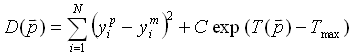
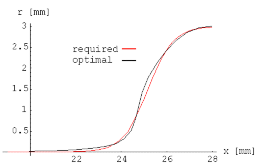
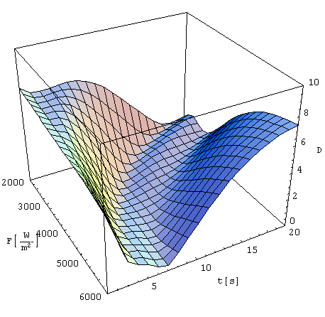

In this example a two-stage processing of an axisymmetric billet
with length L=30 mm and radius r=10 mm is considered:
Figure 2: Effective stress distribution in the deformed
specimen after forming. The heat flux
Fo=3.500 W/m2 is applied for th=10
s. Displacement of the right surface ux=-2 mm.
Table 1: Material properties
| Thermal conductivity (K) |
30
|
[W/mK]
|
| Heat capacity (C) |
500
|
[J/kg K]
|
| Density (r) |
7850
|
[kg/m3]
|
| Youngs module (E) |
210000
|
[MPa]
|
|
Poissons ratio (n)
|
0.3
|
[/]
|
|
Temperature [oC]
|
Yield stress [MPa]
|
|
20
|
700
|
|
100
|
620
|
|
200
|
560
|
|
300
|
540
|
|
400
|
510
|
|
500
|
500
|
|
600
|
390
|
|
700
|
200
|
|
800
|
180
|
|
900
|
150
|
|
1000
|
120
|
|
1100
|
90
|
|
1200
|
60
|
Find optimal heating parameters defined by heat flux Fo
and heating time th so that the difference between required
and computed shapes of the specimen after forming is minimum. The objective
function to be minimised is expressed in terms of differences of the required
and computed node coordinates in the interval 20mm £
x £ 28mm. The choice of heating parameters
is constrained by maximum permissible temperature of the specimen Tmax=1200oC.
The constraint is presented in Figure 3.
Figure 3: Constraint imposed on the choice of heating parameters.
Contours show maximum temperature of the specimen as a function of applied
heat flux and heating time. Spacing between contours is 100oC
We introduce the constrain to the objective function by adding the temperature term, which increases rapidly when the maximum temperature of the billet is coming near to the permissible temperature. The objective function for this case is:
 (1)
The parameter vector (F, th) is denoted by . Prescribed node coordinates are denoted by upper index p and the measured node coordinates are denoted by upper index m. Maximum temperature at the right end of the billet after the heating is denoted by .
Heat flux and heating time can only have positive values. To assure
that during the optimization algorithm a transformation function that maps
the parameters from [-¥,¥] to [0,¥]
must be applied.
(2)
(3)
The billet deformation after the forming depends on the billet temperature
distribution that can be calculated by the following equation:
(4)
Temperature distributions for three different heating regimes are presented
in figure 4.
Figure 4: Temperature distributions along x-axis for three different
heating regimes
Different temperature distributions result in different shapes of the
billet after the forming. Shapes for the temperature distributions from
the figure 4 are presented in figure 5.
Figure 5: Deformed shapes of the specimen after forming for
three different heating regimes
The required shape of the billet after both stages of forming is prescribed by the following sigmoidal function:
The optimization was done by the inverse shell using the nonlinear
simplex method. Optimal solution was found in 34 iterations. The required
shape and shape at the optimal parameters is presented in figure 6.

Figure 6: Required and optimal shape of the billet at
the optimal solution
Fopt = 3628674.9 W/m2, topt =
7.99 s, D(opt) = 0.1448.
The shell also includes functions for tabelating. Since the case only
has two parameters it is possible to plot the objective function in the
finite domain of the parameter space. Figure 7 shows 19x17 points diagram
of the objective function. The temperature constrain term is ommited.

Figure 7: Objective function on the finite domain of the parameter
space (19x17 points). The temperature constrain term is omitted.
Figure 8: Conture of the objective function with maximal temperature constraint (blue), maximal force constraint (black) and optimal solution (red path starting in blue point and ending in green point) included.